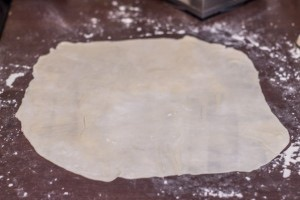
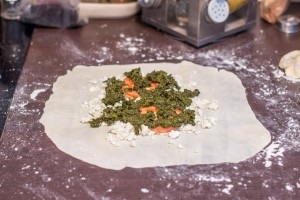
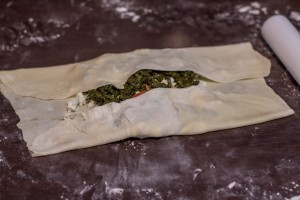
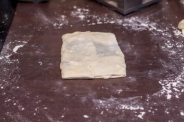

Gozleme épinards tomate feta
Aujourd’hui je vous retrouve pour vous présenter ma première recette ramenée tout droit de mes vacances en Turquie et il s’agit de la recette de gozleme aux épinards.
Sans mentir je dirai que depuis notre retour, il n’y a pas eu une seule semaine où je n’ai pas fait ce pain plat Turc car la première fois où j’ai gouté les gozlemes je suis devenue totalement fan (et je ne suis pas la seule^^). Je savais qu’il fallait que je goûte à cette spécialité car il y en a absolument partout! Vous trouvez des gozlemes aussi bien dans les restaurants que sur les bords de routes. Des femmes sont dans des petites cabanes en bois et vendent des gozlemes à n’importe quelle heure de la journée c’est totalement incroyable!
Le gozleme, qui vous l’aurez compris est un pain « plat » fourré de plein de bonnes choses, s’écrit normalement « gözleme », göz et signifie «compartiment», en référence à la poche que forme la pâte dans laquelle les divers ingrédients vont être cuits. Traditionnellement, cela se fait sur une « saç » qui n’est autre qu’une plaque chauffante.
Les premiers gozlemes que j’ai eu la chance de manger ont été préparés par ces deux femmes lors de notre visite des « cascade de Düden » et j’avais vraiment hâte de vous partager la recette! J’ai été surprise par la pâte car contrairement à beaucoup de recettes que l’on peut trouver sur internet elle ne contient absolument pas de levure (parole de ces deux femmes qui ont gentiment accepté de partager avec moi leur savoir-faire!). La pâte à gozleme se fait donc très rapidement et ne demande aucun temps de pousse (et ça niveau temps c’est vraiment génial!). Je la laisse reposer 30 minutes pour qu’elle s’assouplisse et qu’elle soit plus facilement manipulable. Vous pouvez faire vos gozlemes à ce que vous voulez… De la viande, du fromage, des légumes le plus traditionnel (ou du moins celui que j’ai le plus aperçu) c’est celui aux épinards. Ce jour-là mon chéri avait d’ailleurs pris un gozleme aux épinards et moi au fromage et au miel et waouh c’était un délice. Je vais m’arrêter là car sinon je vais partir dans un article voyage et vous raconter toutes nos vacances mais ça c’est prévu pour plus tard! Je vous laisse donc découvrir la recette de mes gozlemes que j’ai choisi de farcir avec des tomates, des épinards et de la feta!
Ingrédients
- Farine - 180g
- Yaourt grec - 130ml
- Sel - 1 pincée
- Pousse d'épinards (ou 250g d'épinards en conserve) - 100g
- Tomates - 2
- Feta - 200g
Instructions
- Dans un saladier, mélanger la farine et le sel
- Faire un puits au centre
- Verser le yaourt dans le puits
- Mélanger jusqu'à former une boule de pâte homogène
- Filmer la pâte avec du cellophane
- Laisser reposer environ 30 minutes à température ambiante
- Pendant ce temps, préparer votre garniture Couper les tomates en rondelles, laver vos épinards etc...
- Peser la pâte et divisez-la en 4 pâtons
- Fariner votre plan de travail
- Étirer vos pâtons en galettes très très très fines
- Au centre des galettes émietter 1/4 de la feta
- Déposer des rondelles de tomates sur le dessus
- Ajouter les épinards Attention la garniture doit être bien répartie et étalée pour que ça ne fasse pas quelque chose d’énorme^^
- Plier votre gozleme en rabattant deux bords sur la garniture et faites de même avec les deux bords restants
- Cuire 2 minutes de chaque côté dans une poêle type poêle à crêpes sans ajouter de matière grasse Je n'ai jamais vraiment chronométré le temps de cuisson mais dès que vous voyez des petites taches marron claires apparaitre vous pouvez retourner votre gozleme




Les tips de la communauté
Recette phare très appréciée avec une majorité de commentaires positifs. Nombreux retours de lecteurs ayant testé et approuvé la recette. Plusieurs questions posées sur les techniques (épaisseur, cuisson des épinards). L'auteure confirme que c'est simple, rapide et facile à préparer. Variations de farces largement appréciées.
Astuces
- Les épinards crus passent bien - pas nécessaire de les cuire avant
- Respecter le temps de pause pour que la pâte soit souple et s'étire facilement
- Bien fariner le plan de travail et utiliser un rouleau pour étaler la pâte finement
- Pas de levure (c'est important pour l'authenticité et la texture fine)
- Mettre dans le four éteint (chauffé légèrement) pour garder au chaud
Variantes suggérées
- Ricotta épinards et poêlée de carottes au curry avec mozza
- Poires, compotée, chèvre et miel
- Pignons de pin grillés avec épinards
- Chocolat noir 70% râpé en garniture sucrée
- Sauce tomate arabiata à la place de tomates fraîches
Ajustements signalés
- Utiliser du yaourt à la grecque (à la Grecque) - pas simplement un yaourt normal
- Remplacer la feta par du fromage râpé ou la retirer complètement